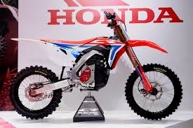

dirtbikes are two wheeled vehicle.
there is two types of moters in a dirt bike the is a two stroke, and a four stroke. a two stroke is faster and has a little more power. A 4 stroke has 4 gears and is better for going up hills. It also is fast but only in 3rd and 4th gear 2 gear is for going up a hill and 1st is to do wheelies.
-
what to wear foor riding:
- helmet
- chest protector
- gloves
- boots
- riding pants